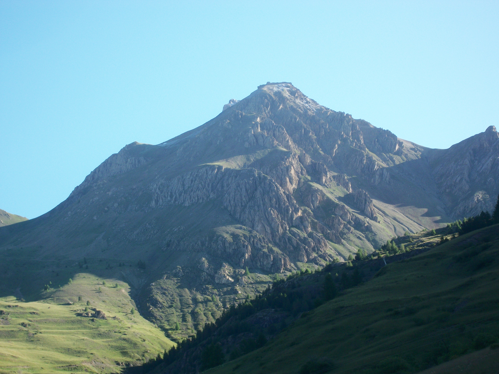

C'est en tombant par hasard sur le site internet d'un randonneur au long cours, Simon Dubuis ( www.dubuis.net ), que m'a pris l'envie de me lancer à mon tour de me lancer dans ce genre d'aventure. N'ayant aucune expérience des longues randonnées, j'ai décidé de démarrer par une randonnée relativement courte, de 3 semaines. Cela afin de tester si j'étais capable de marcher pendant plusieurs journées d'affilée, et aussi d'apprendre à mieux préparer mes randonnées suivantes.
J'ai alors choisi d'effectuer la traversée des Alpes du Sud. Parti de Monaco, je suis arrivé à Valloire 3 semaines plus tard, après avoir notamment traversé l'Arrière-Pays Niçois, le Mercantour, le Queyras et les Ecrins. J'ai choisi Monaco comme lieu de départ car il s'agit pour moi du plus bel endroit que je connaisse en France, une petite principauté connue dans le monde entier, au milieu de la Riviera Française, entourée de corniches abruptes plongeant dans la Mer Méditarranée. Quant à Valloire, j'ai décidé d'y terminer ma randonnée car c'est dans ce village de montagne que j'allais passer mes étés durant toute mon enfance. Cette station est aussi idéalement située, juste après la fin des Alpes du Sud.
